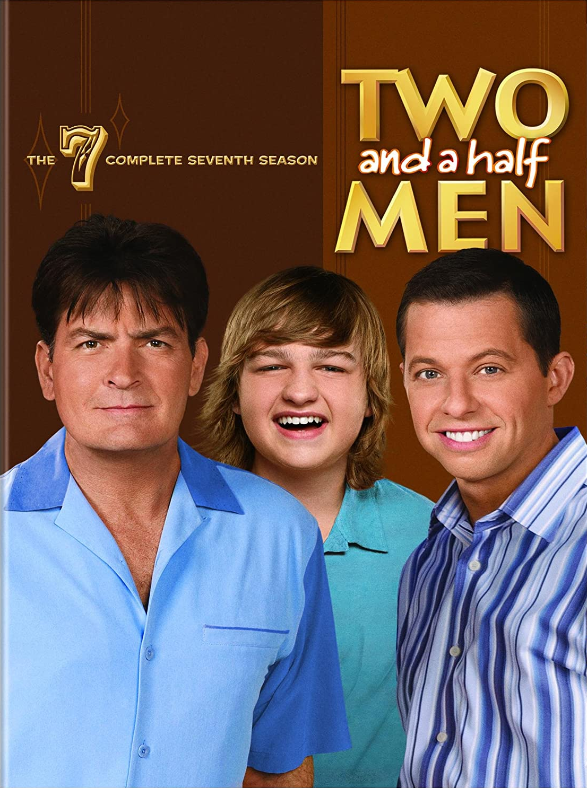

Two and a Half Men (known as Two and a Half Men in Spanish) is an American sitcom, starring until the eighth season by Charlie Sheen, Jon Cryer and Angus T. Jones, and in the last four seasons by Cryer, Ashton Kutcher and Angus T. Jones.
 House:House MD (House in Spain and Gregory House: Medical Diagnosis, during the first seasons in Latin America) is an American television series premiered in 2004 by FOX and ended in 2012. It was created by David Shore, who is also an executive producer together others like Paul Attanasio, Katie Jacobs or Bryan Singer.